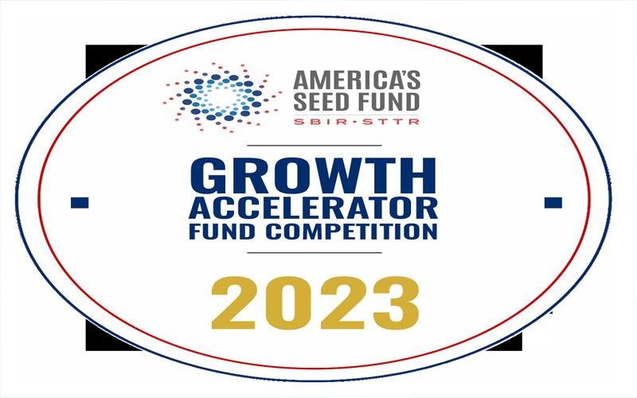

The Small Business Innovation Research (SBIR) grant program has been instrumental in fostering innovation and driving economic growth. If
you're a small business seeking funding for research and development (R&D) projects, understanding the SBIR grant application process is
crucial. In this article, we'll provide a breakdown of the process, delve into its history, and share valuable strategies to maximize your
chances of securing an SBIR grant.
The SBIR grant program was established in 1982 by the U.S. government to support small businesses in conducting R&D with commercial potential. Since its inception, the program has provided billions of dollars in funding to innovative ventures across various industries, ranging from technology and healthcare to energy and agriculture. The SBIR program aims to stimulate technological advancements and help small businesses bring their ideas to market.
Research Eligibility and Topics: Start by identifying the federal agencies that align with your business's objectives. Each agency has specific eligibility criteria and research topics. Thoroughly review the solicitations and guidelines provided by these agencies to determine the fit for your project. Develop a Compelling Proposal: Craft a wellstructured and persuasive proposal that outlines your project's technical feasibility, market potential, and commercialization plan.
Clearly articulate the problem your research aims to solve, the innovation behind your solution, and the expected outcomes. Collaborate and Seek Expert Advice: Leverage the expertise of researchers, industry partners, and consultants to strengthen your proposal. Collaborating with universities, research institutions, or other small businesses can enhance the technical credibility and potential impact of your project.
Understand the Review Process: Familiarize yourself with the evaluation criteria and review process of the specific agency you are applying to. Tailor your proposal to address these criteria and emphasize the potential benefits of your research. Seek Early Feedback: Engage with program managers or technical contacts at the funding agency before submitting your proposal. This can provide valuable insights and help align your project with the agency's priorities. Build a Strong Commercialization Plan: Demonstrating the market potential and economic impact of your research is crucial.
Develop a comprehensive commercialization plan that highlights your strategy for bringing the innovation to market and creating a sustainable business model.Securing an SBIR grant can be a game-changer for small businesses looking to drive innovation and commercialize their ideas. By understanding the SBIR grant application process, leveraging key strategies, and developing a compelling proposal, you can increase your chances of success.
The SBIR grant program was established in 1982 by the U.S. government to support small businesses in conducting R&D with commercial potential. Since its inception, the program has provided billions of dollars in funding to innovative ventures across various industries, ranging from technology and healthcare to energy and agriculture. The SBIR program aims to stimulate technological advancements and help small businesses bring their ideas to market.
Research Eligibility and Topics: Start by identifying the federal agencies that align with your business's objectives. Each agency has specific eligibility criteria and research topics. Thoroughly review the solicitations and guidelines provided by these agencies to determine the fit for your project. Develop a Compelling Proposal: Craft a wellstructured and persuasive proposal that outlines your project's technical feasibility, market potential, and commercialization plan.
Clearly articulate the problem your research aims to solve, the innovation behind your solution, and the expected outcomes. Collaborate and Seek Expert Advice: Leverage the expertise of researchers, industry partners, and consultants to strengthen your proposal. Collaborating with universities, research institutions, or other small businesses can enhance the technical credibility and potential impact of your project.
Understand the Review Process: Familiarize yourself with the evaluation criteria and review process of the specific agency you are applying to. Tailor your proposal to address these criteria and emphasize the potential benefits of your research. Seek Early Feedback: Engage with program managers or technical contacts at the funding agency before submitting your proposal. This can provide valuable insights and help align your project with the agency's priorities. Build a Strong Commercialization Plan: Demonstrating the market potential and economic impact of your research is crucial.
Develop a comprehensive commercialization plan that highlights your strategy for bringing the innovation to market and creating a sustainable business model.Securing an SBIR grant can be a game-changer for small businesses looking to drive innovation and commercialize their ideas. By understanding the SBIR grant application process, leveraging key strategies, and developing a compelling proposal, you can increase your chances of success.